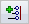

Annotation Alignment Shape command
The Annotation Alignment Shape command

creates a simple geometric shape composed of one or more lines, which you can use to align or arrange one or more types of annotations. You can create different shapes to use for different types of annotations.Annotation alignment shapes are also created by the Parts List command.
You can select and modify any alignment shape.
Creating alignment shapes
When you select the Annotation Alignment Shape command, you are prompted to click points in free space to draw the shape.
-
You can use the Annotation Alignment Shape command bar or the Alignment Shape Properties dialog box (General tab) to specify the type of shape (Closed, Open), and the type of spacing (Uniform, Non-uniform).
-
You can assign annotations by type to each shape using the Alignment Shape Properties dialog box (Annotations tab).
Closed shapes must have at least three line segments; open shapes must have at least one.
Associating alignment shapes with annotations
You can associate annotations with alignment shapes using any of the following techniques:
-
Using a parts list—An auto-ballooned parts list creates an alignment shape automatically, and the item balloons in the drawing view are associated with it by default. Before you place a parts list, you can use the Balloon tab (Parts List Properties dialog box) to change the default alignment pattern (Outline) to something else, such as Top, Bottom, Left, Right, or Rectangle.
Shape type
Example
Outline


Top


Bottom


Left


Right


Rectangle


-
Using the Drawing View option on the command bar—When creating a new shape, you can select the Drawing View option to link the shape to an existing drawing view. This enables the alignment shape to move and scale with the drawing view.
-
Using an annotation—When you add new annotations to a drawing view, you can place them by clicking an annotation shape. You also can drag an existing annotation onto the alignment shape to associate them.
-
Using the alignment shape—When you create a new alignment shape, you can create associations with existing annotations by touching them as you draw the alignment shape. Alternatively, you can move an alignment shape or a segment of an alignment shape so that it touches an annotation, creating an association between them.
How do I
Align annotations using the Annotation Alignment Shape commandManage annotations that are associated with an alignment shape
Learn more
Arranging annotations using alignment shapesModifying alignment shapes to rearrange annotations
Look up more details
Show/Hide Annotation Alignment Shape commandAnnotation Alignment Shape command bar
Alignment Shape Properties dialog box
Alignment Shape Properties dialog box (General tab)
Alignment Shape Properties dialog box (Annotations tab)